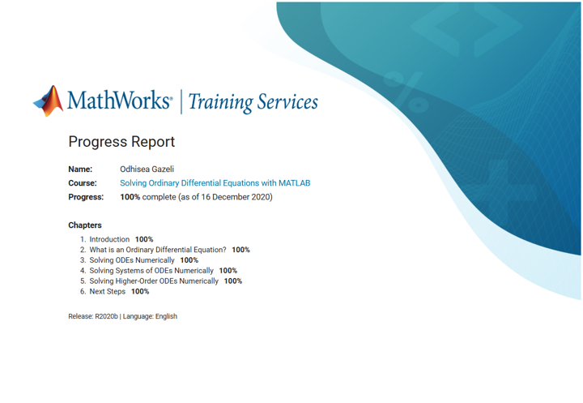
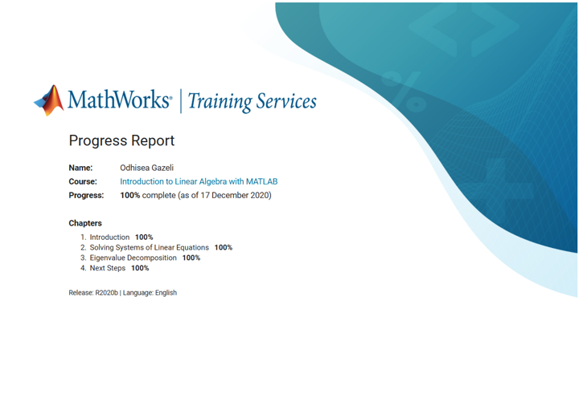
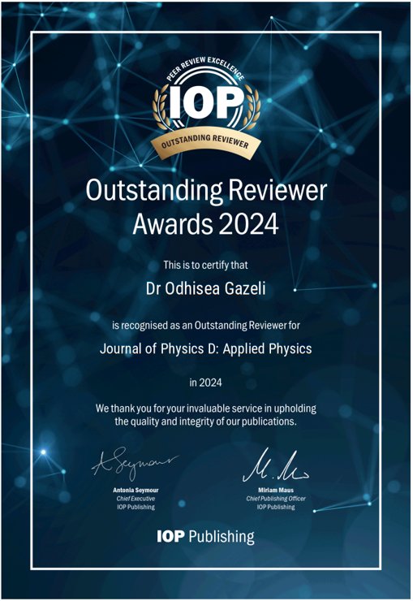
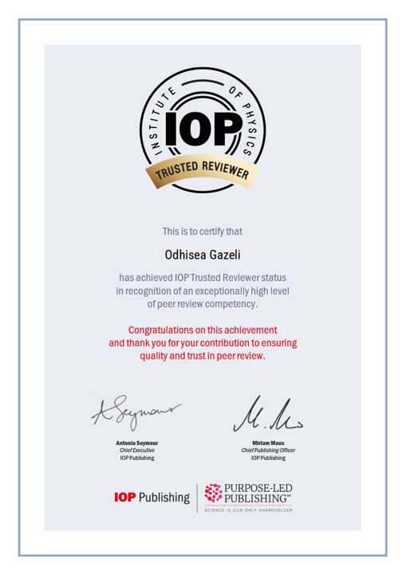
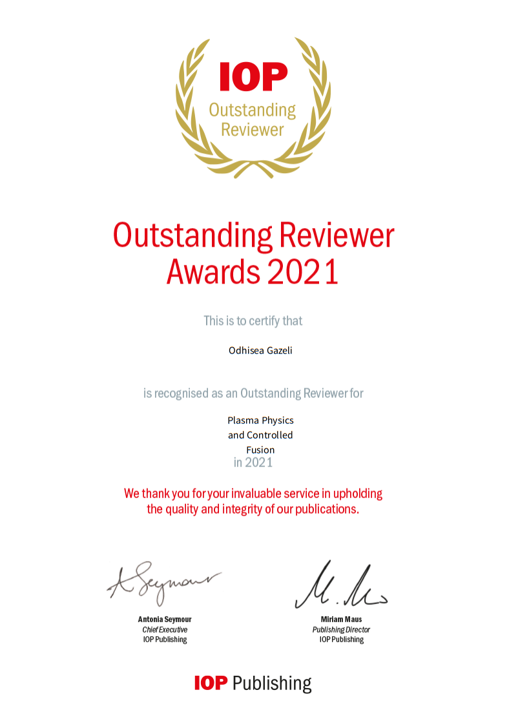

Education
Joint PhD, Plasma Physics & Applications | 2020 – Present
University of Cyprus, Cyprus & University of Jaén, Spain
MSc, Physics (Photonics & Lasers) | 2016 – 2019
University of Patras, Greece
Thesis: "Elemental analysis of liquid metallurgical slag by laser-induced plasma technique (LIBS)"
BSc, Physics | 2007 – 2016
University of Patras, Greece
Professional Experience
Research Fellow | Feb 2025 – Jun 2026
Department of Industrial Engineering, University of Bologna, Italy
Special Scientist & Teaching Assistant | Oct 2019 – Present
FOSS Research Centre & Dept. of ECE, University of Cyprus, Cyprus
Teaching Assistant (UCY)
- ECE 331 - Electromagnetic Fields
- ECE 370 - Introduction to Biomedical Engineering
- ECE 220 - Signals and Systems I
- ECE 478 - Digital Image Processing
- ECE 333 - Photonics
Personal Tutor (University Level)
- Information Theory
- Tensor Analysis
- Astrophysics
- MATLAB
- Mathematical Methods
- Space Plasma Physics
- Discrete Mathematics
- Computer Architecture
Operating Systems & Suites
Microsoft Windows, Microsoft Office, Scrivener, Overleaf (LaTeX)
Technical Drawing (Low to Medium)
Autodesk Inventor, SolidWorks, Google SketchUp
Programming (MATLAB - High, Python - Mid, Arduino - Hobby)
MATLAB, Python, Arduino
Data Analysis & Computational
OriginLab, COMSOL Multiphysics, Mendeley, Zotero, Obsidian
OpenFOAM-based framework for modelling low temperature plasmas | Oral | ESCAMPIG XXVII, Portugal
OES of Low-Pressure DC Argon Plasmas for Reconfigurable Technologies | Oral | PULSE meeting, Online
OES of Low-Pressure DC Argon Plasmas for Reconfigurable Technologies | Oral | PULSE Review, Bologna
Two-dimensional distribution of atomic nitrogen absolute density in DC MHCD | Oral | PLATHINIUM, France
Calculation of Electron Density by Stark Broadening method | Oral | PULSE Annual Meeting, Madrid
Numerical modeling of plasma and applications in analytical chemistry | Oral | Ain Shams University, Tunisia
Analytical chemical detection methods using Ambient Ionization MS | Oral | Ain Shams University, Egypt
Understanding Desorption & Ionization Mechanisms of Plasma Sources in MS | Oral | Workshop on Numerical Methods, Cyprus
Low Temperature Plasma probe: investigation of desorption mechanisms | Oral | Plasma Physics & Applications, Romania
In silico modelling of cancer cell response to cold helium plasma jet | Oral | VPH 2022, Portugal
An in-silico approach to quantify apoptotic effects of cold plasma jet | Oral | WCCM-XV, Japan
Interrogating an in-silico model for melanoma cancer cell response | Oral | WCB 2022, Taipei
Controlled atmosphere flexible microtubule plasma ionization source | Oral | STARSS, Czech Republic
Plasma fluid and solid tumor models to study reactive species diffusion | Oral | IWPCT, Spain
Numerical investigation of plasma processes in a flexible dielectric tube | Oral | ESCAMPIG XXV, France
Controlling geographic origin of agricultural products using LIBS & ML | Oral | Conf. of Chemical Engineering, Greece
Applications of LIBS for recycling and food analysis | Oral | Workshop of Graduates, Greece
Laser Induced Breakdown Spectroscopy for Analytical Applications | Oral | Workshop of Graduates, Greece
Non-ferrous slag analysis using Laser-Induced Breakdown Spectroscopy | Oral | EMSLIBS, Italy
Additive Manufacturing of 3D DBD Micro-plasma Sources | Poster | FLTPD XVI, Netherlands
Rapid characterization of cannabis products using ambient ionization MS | Poster | 1st Chemistry Conf., Cyprus
Analytical chemical detection methods using Ambient Ionization MS | Poster | Ain Shams University, Egypt
An absolute quantitative approach to study desorption in plasma-based MS | Poster | ASMS, USA
Detection of Volatile Compounds as Cancer Biomarkers in Saliva using CAFuTP | Poster | ICPM, South Korea
Separation and classification of plastics through laser induced plasma spectroscopy | Poster | Conf. of Chemical Engineering, Greece
Applications of LIBS for recycling and food analysis | Poster | Workshop of Graduates, Greece
Laser Induced Breakdown Spectroscopy for Analytical Applications | Poster | Scientific Conf. ITE, Greece
Comparison between two PLS regression approaches for chemical quantification | Poster | EUROMAT, Greece
9 Specialized Academic Seminars (UCY, Imperial College London, NTUA) | Seminar
19 Scientific Webinars attended (COMSOL, ISAS Leibniz-Institut, Relyon Plasma) | Webinar
Honors, Reviews & Credentials
Peer Review & Outstanding Reviewer Status
Outstanding Reviewer Award | IOP Publishing (2021, 2024, 2025, 2026)
Trusted Reviewer Status | IOP Publishing
- Machine Learning: Engineering (×1)
- Engineering Research Express (×1)
- Journal of Physics D: Applied Physics (×6)
- Plasma Physics and Controlled Fusion (×1)
- Discover Materials (×1)
Featured Certificates

MATLAB - Solving ODEs
MATLAB - Linear Algebra
IOP Reviewer Award 2024
IOP Trusted Reviewer Status
IOP Reviewer Award 2021